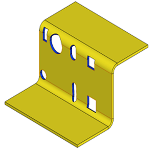

カットアウトからパーツのエッジまでの最小距離と板厚との比率は、ユーザーが指定した値以上である必要があります。
カットアウトからパーツのエッジまでの距離が最小値を下回る場合、対象領域における板材の変形や割れの可能性が高くなります。許容距離は製造方法によって異なります。カットアウトがエッジに近すぎると、エッジが変形して膨らみが生じることがあります。これは、パーツをクランプするためのスペースが不足していることが原因で発生する場合があります。カットアウトのエッジからの最小距離は、材料の板厚とする必要があります。
ユーザーは、デフォルトで構成されている値を変更することができます。
注記：
ユーザーが2つ目のオプションである「カットアウト長さに基づく（Based on Cutout Length）」を選択し、曲げエッジ上にカットアウトが存在する場合、それらのカットアウトは解析対象外となります。ただし、これらのカットアウトは1つ目のオプションでは違反（失敗）となります。

ここでは、
D = カットアウトからパーツエッジまでの最小距離
L = カットアウト長さ
t = 板厚
ユーザーは、Import ボタンを使用して、Excelシートテンプレート内にある一括データをインポートすることができます。
標準テンプレート形式：
L1/t |
L2/t |
D/t |
1 |
10 |
1.0 |
10 |
25 |
2.5 |
30 |
|
3.5 |
注記：
面取り付きのカットアウトにも対応しています。

以下の標準形状のカットアウトが「カットアウト長さに基づく（Based on cutout length）」でサポートされています。

ここでは、
L = カットアウトの長さ